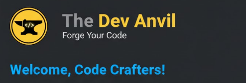

Forging a New Foundation: Welcome to The Dev Anvil
Hello, and a huge welcome to The Dev Anvil!
If you're an old friend joining us from the portfolio site, thank you so much for making the jump — it means the world to have you here. If you're new, I'm thrilled you found our little corner of the internet. Either way, pull up a chair and let's get to work!
For those who may not know, this new space is a major upgrade. I decided to give this content a dedicated home so we could focus entirely on in-depth content, new features, and building a stronger community.
What is The Dev Anvil?
The name itself says it all. An anvil is where a smith takes raw metal and, through focused work, heat, and impact, forges it into something strong and purposeful.
The Dev Anvil is your workshop.
This site is dedicated to taking complex concepts in web development and turning them into practical, actionable knowledge. You can expect to find:
- Deep-Dive Tutorials: Focused guides that go beyond the basics, helping you master specific technologies (like advanced CSS and modern JavaScript frameworks).
- Career and Productivity Insights: Tips on developer workflow, interview prep, and charting your path in the tech industry.
My goal isn't just to share code—it's to help you forge your code and become a more effective, confident developer.
Let’s Connect!
This isn't a one-way street. I want to hear from you! The best way to use The Dev Anvil is to treat it like a collaboration.
Share your biggest coding challenges with me so I can create content that helps solve your specific problems. You can leave a comment below, reach out via the contact form on my portfolio site, or connect with me on social media.
I’m incredibly excited about what we're going to build together here. Thank you for joining me on this new adventure.